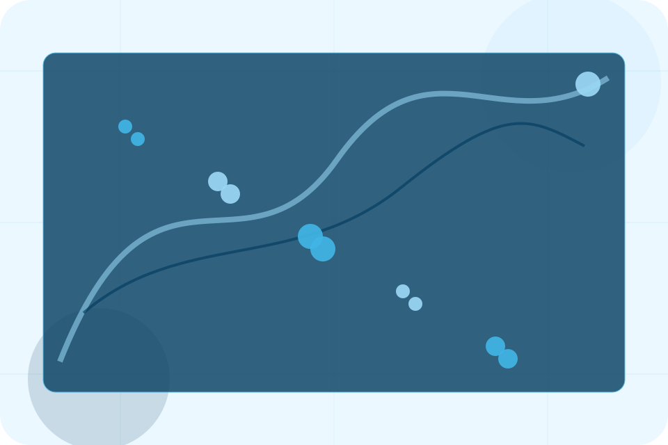
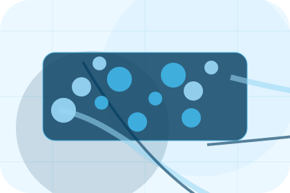
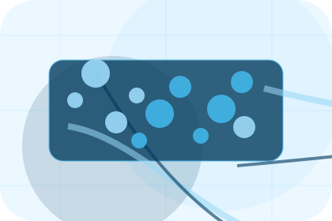
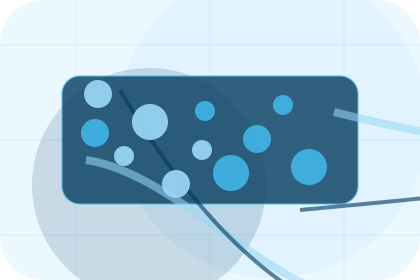
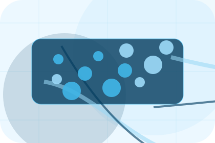
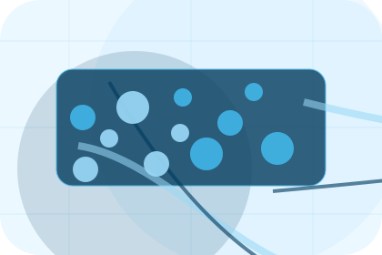
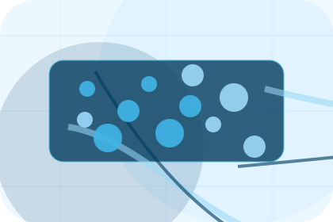
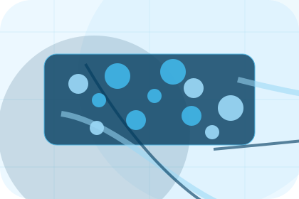
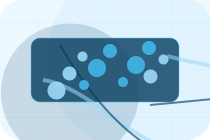
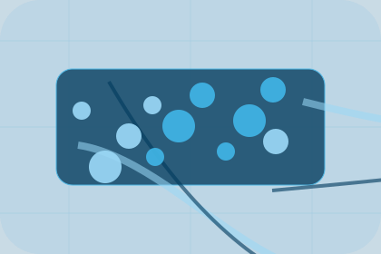

Context
ETA gives the page a specific angle instead of repeating the navigation label.
Tracking / 01
Tracking opens as a clear maritime decision hub: what Port offers, who it helps, why it matters, and which route to take first.
The first screen combines positioning, proof, primary action, and fast internal navigation, so people can act immediately or compare the rest of the tracking route with context.
Shipping route hero
Select the closest route and Port keeps the next step, proof, and follow-up expectation aligned with cargo reliability and reach.

Tracking / 02
ETA adds dark context to the tracking route, using the blue ocean logistics portal structure to support cargo reliability and reach before visitors choose a next step.
Port uses cargo service cards and focused copy to make the decision easier to scan, aligning the section with cargo reliability and reach rather than filling space.
Explore Tracking

ETA gives the page a specific angle instead of repeating the navigation label.
Tracking / 03
Documents gives researching visitors a practical route into guides, checklists, and comparison material without leaving the site structure.
Each resource behaves like a useful internal link, giving cold and warm visitors a way to learn, compare, and return to the action path.
Explore TrackingA useful entry point for visitors who need more context before they request shipping.

A scannable comparison aid that makes research usable before the next decision.

A route back to support, services, or contact when the visitor is ready to act.
Tracking / 04
Status adds dark context to the tracking route, using the blue ocean logistics portal structure to support cargo reliability and reach before visitors choose a next step.
Port uses cargo service cards and focused copy to make the decision easier to scan, aligning the section with cargo reliability and reach rather than filling space.
Explore TrackingStatus gives the page a specific angle instead of repeating the navigation label.
The cargo service cards show what to compare, what to avoid, and what matters most for maritime, shipping & marine services visitors.
The final cue points to a useful internal route so the section keeps the journey moving.
Tracking / 05
Exceptions adds dark context to the tracking route, using the blue ocean logistics portal structure to support cargo reliability and reach before visitors choose a next step.
Port uses cargo service cards and focused copy to make the decision easier to scan, aligning the section with cargo reliability and reach rather than filling space.
Explore TrackingExceptions gives the page a specific angle instead of repeating the navigation label.
The cargo service cards show what to compare, what to avoid, and what matters most for maritime, shipping & marine services visitors.
The final cue points to a useful internal route so the section keeps the journey moving.
Tracking / 06
Alerts adds dark context to the tracking route, using the blue ocean logistics portal structure to support cargo reliability and reach before visitors choose a next step.
Port uses cargo service cards and focused copy to make the decision easier to scan, aligning the section with cargo reliability and reach rather than filling space.
Explore TrackingAlerts gives the page a specific angle instead of repeating the navigation label.
The cargo service cards show what to compare, what to avoid, and what matters most for maritime, shipping & marine services visitors.
The final cue points to a useful internal route so the section keeps the journey moving.
Tracking / 07
Proof shows what changes after the work: clearer decisions, visible progress, and proof points that connect the offer to real outcomes.
The layout connects before-and-after thinking with measured outcomes, making the result easy to scan without promising what the business cannot guarantee.
Explore TrackingThe uncertainty, delay, or missed opportunity visitors bring into proof.
The clearer, safer, or more valuable state Port is designed to support.
The visible cue that connects proof to a believable decision, not a loose claim.
Tracking / 08
Support explains the practical scope, best-fit situations, and expected outcome so maritime visitors can compare options without decoding jargon.
The section keeps the offer concrete: what is included, who it is best for, what decision it supports, and which linked route gives the deeper detail.
Open Contact
Who should use support and when it belongs in the tracking journey.

The practical benefit visitors should expect after choosing this route.

Where to compare details, pricing, support, or contact options before committing.
Tracking / 09
Track adds dark context to the tracking route, using the blue ocean logistics portal structure to support cargo reliability and reach before visitors choose a next step.
Port uses cargo service cards and focused copy to make the decision easier to scan, aligning the section with cargo reliability and reach rather than filling space.
Explore TrackingTrack gives the page a specific angle instead of repeating the navigation label.
The cargo service cards show what to compare, what to avoid, and what matters most for maritime, shipping & marine services visitors.

The final cue points to a useful internal route so the section keeps the journey moving.
Tracking / 10
Port closes the tracking route with a clear action, a quick reminder of the value, and a low-friction way to request shipping.
Visitors who are ready can use the primary action. Visitors who are still comparing can scan the section links, proof, and support routes before they request shipping.
Request ShippingThe final block keeps the choice simple: act now, compare one more proof route, or send enough detail for a focused response.
Request Shippingcargo reliability and reach
A shipping site with ocean-blue service panels, cargo quote logic, port schedules, and tracking proof. Tracking ends with a direct path to request shipping, plus enough context for visitors who still need to compare.

Request Shipping